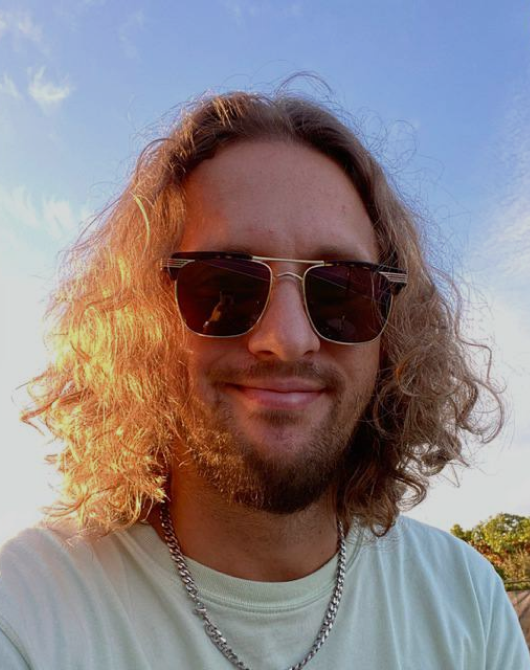

Introducing our Chef
Max Tvorogov
The culinary mastermind responsible for some of the most delectable and diverse dishes you've ever tasted. Max has taken the culinary world by storm with his unique fusion of French, Italian, Slavic, and Asian flavors.